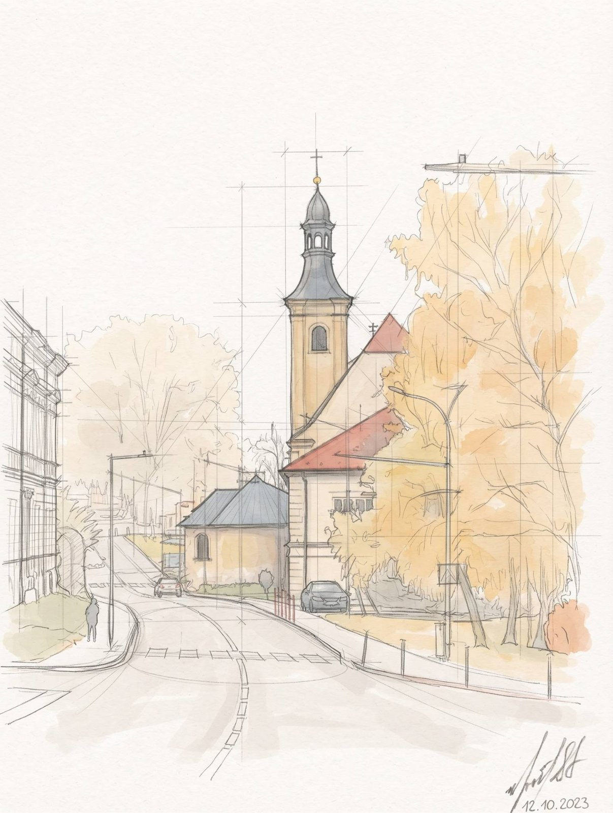
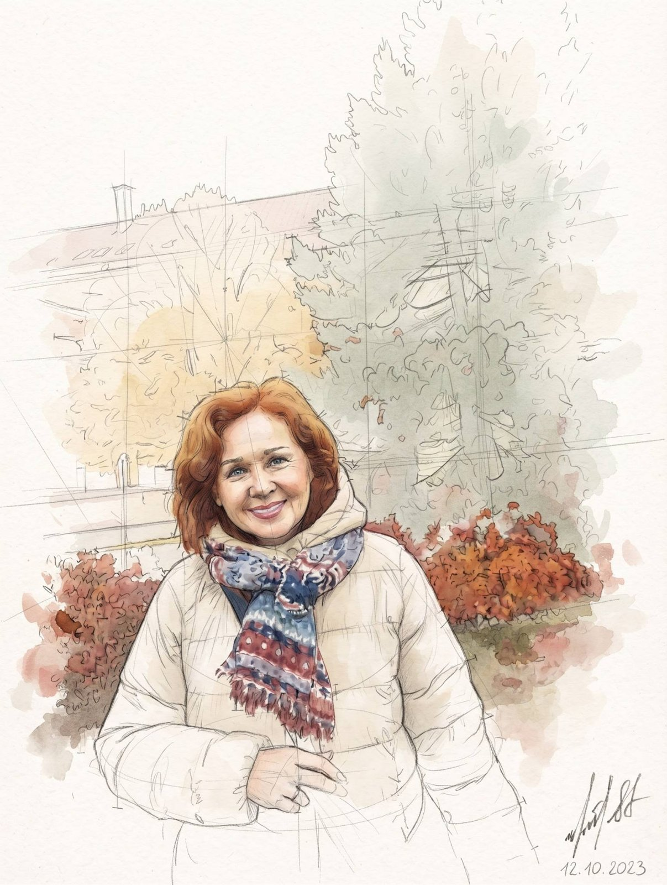
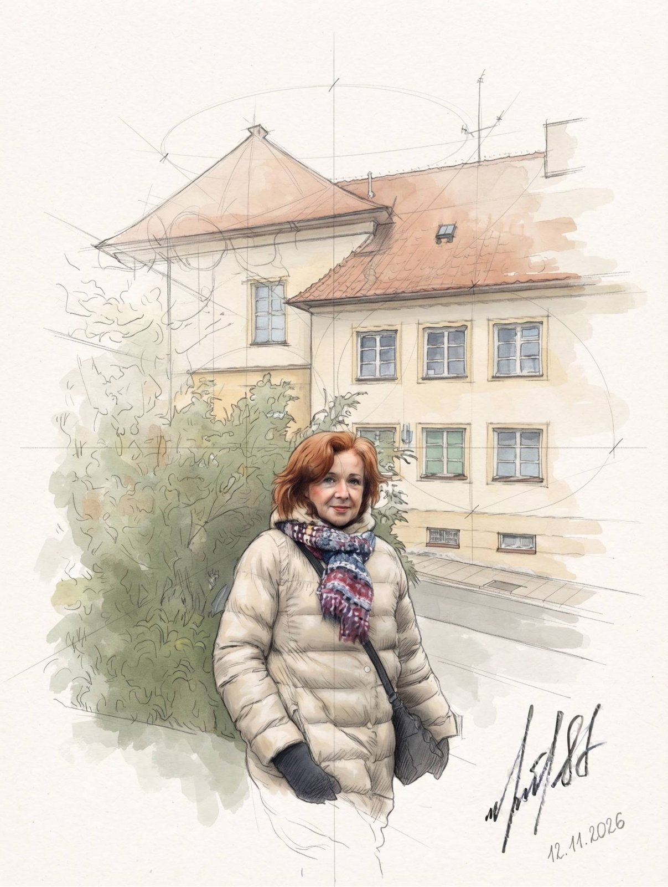
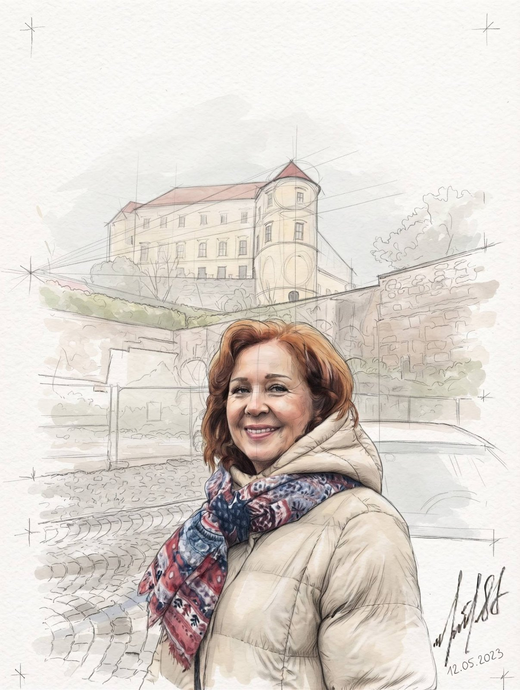
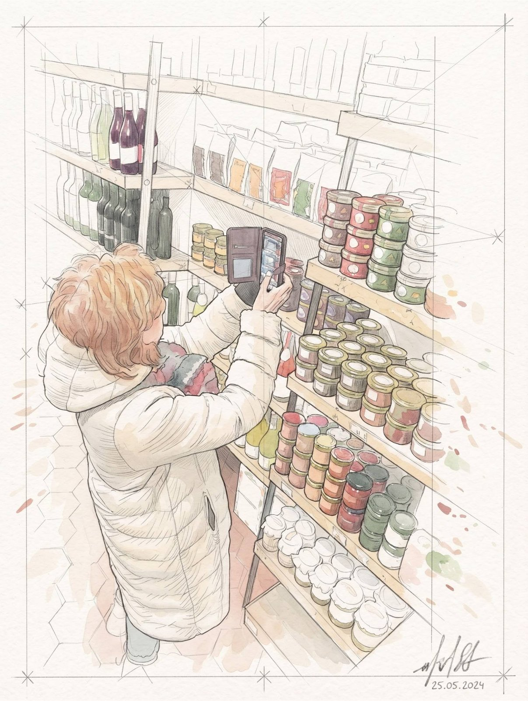
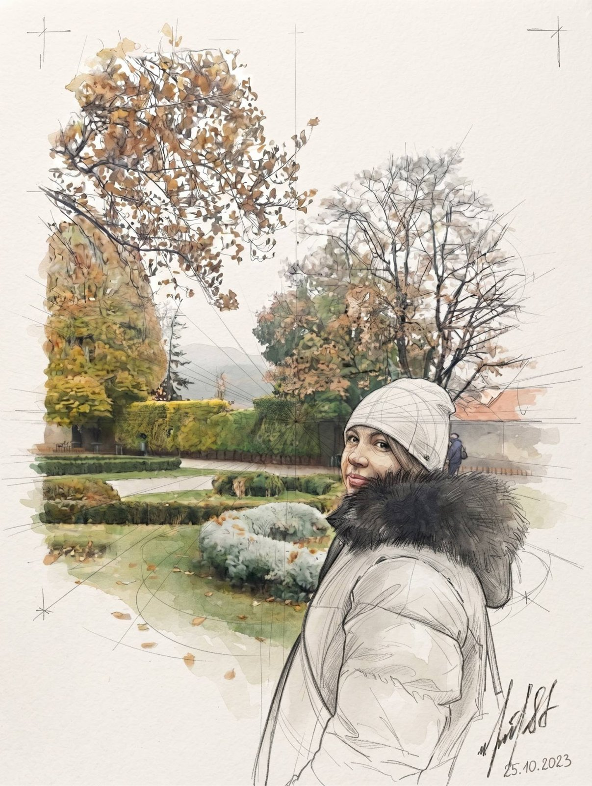
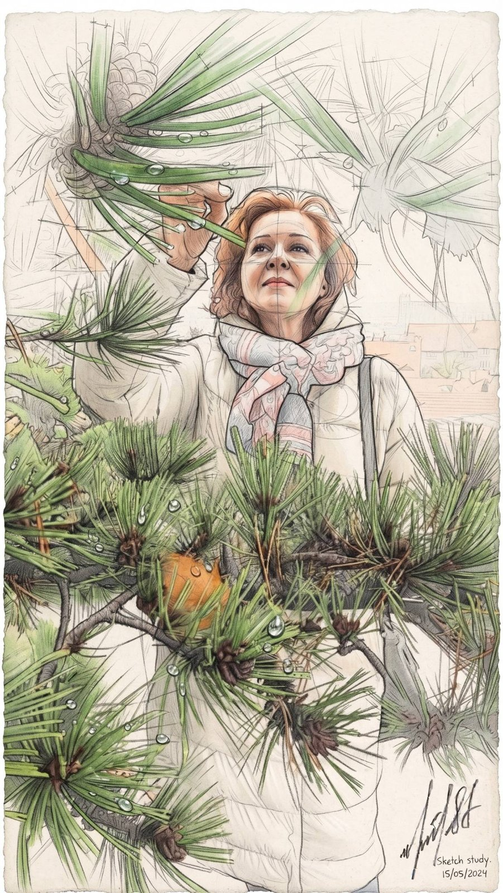
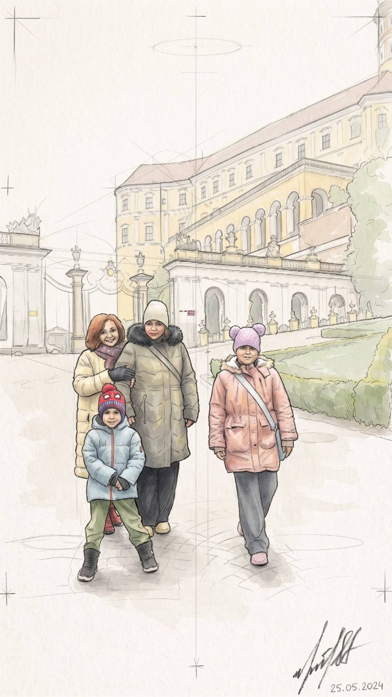
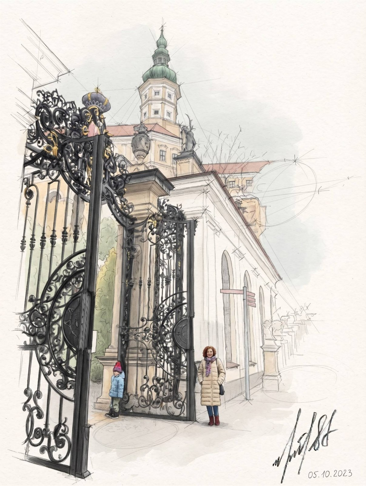

Из Брно в Братиславу, 12 ноября 2026
Остановка в Микулове

По дороге на юг
Утром прощаемся с Брно и едем дальше, в Словакию, в Братиславу. Но по пути делаем остановку в Mikulov (Микулов) — маленьком уютном городке почти у самой границы. Тихая улица, колокольня над крышами и деревья, ещё совсем жёлтые. Осень здесь задержалась.
Прогулка по городку
Идём не спеша. Красные кусты, тёплая куртка, пёстрый шарф — и улыбка, с которой не хочется уезжать.

Старые дома с черепичными крышами, зелёные ставни, плющ у стены. Каждый поворот просится на рисунок.

А над городком, на скале, стоит замок. Отсюда он виден как на ладони — белые стены, круглая башня, а под ним мощёная улица.

Маленькая лавка
Заходим в лавку, а там полки до потолка: вино, баночки с вареньем и паштетами, пакетики с чем-то вкусным. Приходится всё сфотографировать — чтобы потом вспомнить, что понравилось.

У замка
Поднимаемся к замку. Вокруг парк: подстриженные кусты, зелёная трава, деревья в золоте и ржавчине. В белой шапке под таким небом — красиво и спокойно.

У сосны останавливаемся надолго. Длинные иголки, шишка прямо над головой, свежий смолистый запах.

По широкой дорожке идём всей семьёй, дети в ярких шапках. Позади жёлтые стены замка.

А напоследок — кованые ворота с завитками и зелёная башня над ними. Маленькие фигурки у ворот — это мы. Дальше путь в Братиславу.
